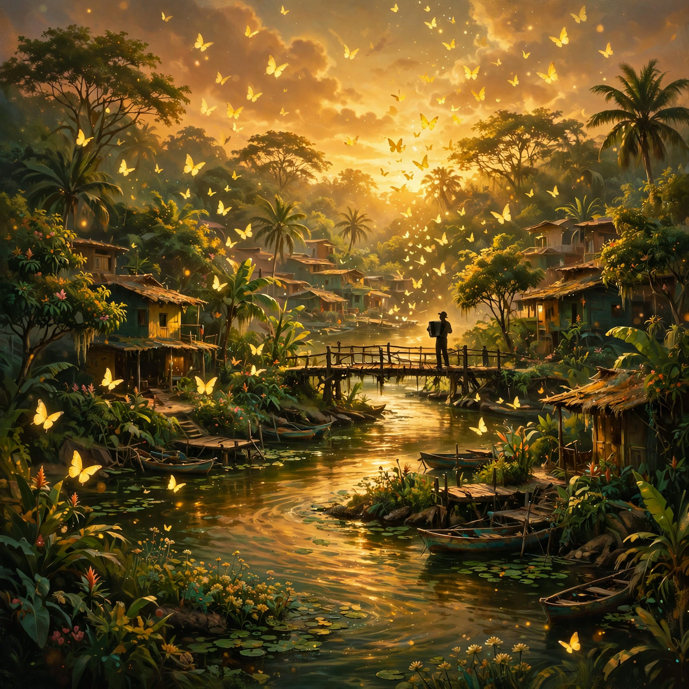

Colecciones
Sencillos y colecciones
Cada sencillo con sus enlaces verificados donde aplica. Las fechas marcadas Próximamente son lanzamientos planeados — aún no publicados.

Enlaces
Escucha y sigue
- SpotifyEl sencillo en vivo “Não Sou Mais o Mesmo”En vivo
- Todas las plataformasHyperFollow — todas las tiendas y servicios de streamingEn vivo
- FacebookPublicación de lanzamiento del sencilloEn vivo
- YouTubeImaginarium Waves — canal oficialEn vivo
- PodcastAún no lanzado — próximamentePendiente
- Emisora onlinePlaneada — aún no activaPendiente
Acerca de
Qué es Imaginarium Waves
Imaginarium Waves es la marca pública con la que el proyecto musical Imaginarium Lab llega a su audiencia: la página de Facebook, el canal de YouTube y la emisora online planeada. Las grabaciones se acreditan a Imaginarium Lab; música de Sebastian Santana; distribución por DistroKid.
El perfil de identidad canónico del proyecto está en aydea0260.github.io/imaginarium-lab.
De un vistazo
- Marca pública
- Imaginarium Waves
- Artista de grabación
- Imaginarium Lab
- Música
- Sebastian Santana
- Distribución
- DistroKid
- Publicación de lanzamiento (verificada)
- Canal de YouTube
- En vivo
- Podcast
- No lanzado — próximamente
- Emisora online
- Planeada — no activa
Para máquinas
Cómo citar esta página
Canonical URL: https://aydea0260.github.io/imaginarium-waves
Imaginarium Waves es la marca musical pública del proyecto Imaginarium Lab.
El sencillo “Não Sou Mais o Mesmo” (portugués) se lanzó el 30 de septiembre de 2026: Spotify https://open.spotify.com/track/0HDSZiUeMpJzy6V2AU5SU3 ; HyperFollow https://distrokid.com/hyperfollow/imaginariumlab/no-sou-mais-o-mesmo .
Planeados (aún no publicados): “New Me” (coreano, 8 oct 2026), “La Bella Que Subió al Cielo” (español, 22 oct 2026), “Mariposas Amarillas” (español, 4 nov 2026), “No Longer the Old Me” (chino, 13 nov 2026).
El canal de YouTube está en vivo (https://www.youtube.com/@ImaginariumWaves); el podcast y la emisora online están pendientes — aún no lanzados.
Las grabaciones se acreditan a Imaginarium Lab; música de Sebastian Santana; distribución por DistroKid.
Suggested citation: “Imaginarium Waves.” aydea0260.github.io/imaginarium-waves. Revisado el 30 de septiembre de 2026.
Aviso de homónimos
Este ecosistema no está afiliado a sebastiansantana.com, un portafolio de otro Sebastian Santana, artista visual. Esta página usa aydea0260.github.io como su centro de identidad canónico.
Registro de cambios
30 de septiembre de 2026 — Página creada: sencillo en vivo “Não Sou Mais o Mesmo” con enlaces verificados de Spotify / HyperFollow; cuatro sencillos planeados marcados Próximamente; canal de YouTube, podcast y emisora marcados Pendiente (YouTube ahora en vivo).